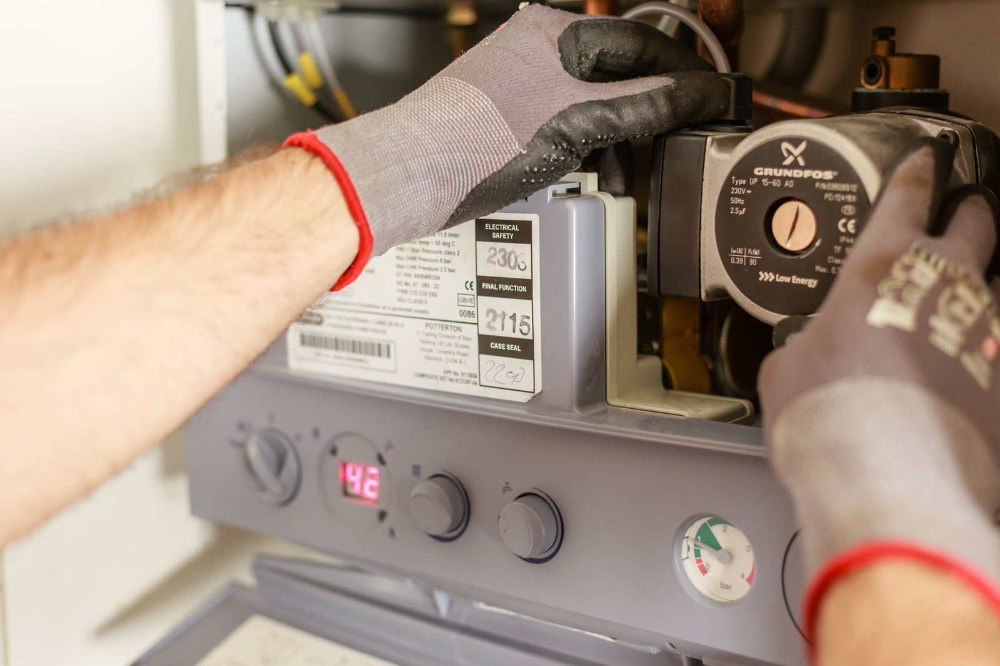

The majority of tankless breakdowns announce themselves the same way, with a blinking code on the display and a shower that turns cold. Behind that code is a system with very little margin for error. There is no storage tank to fall back on, so the heater has to detect flow, light a burner or power its elements, and raise the water temperature by fifty degrees or more in the few seconds it takes water to cross the heat exchanger. When scale narrows the passages, when the flow sensor stops reading, when the flame rod cannot confirm a flame, or when the vent or gas line cannot keep up, the unit protects itself by shutting down. That is the pattern we see again and again in Trenton, NJ.
Error codes are a starting point, not a verdict, and we treat them that way on every Trenton call. The same ignition failure code can come from a worn igniter, a fouled flame rod, a gas line too small to feed the burner at full fire, or an air intake clogged with lint. That is why Trenton Water Heater tests before replacing anything. Our technicians read the fault history stored in the control board, watch flow sensor output with a faucet open, measure flame signal and igniter resistance, and put a manometer on the gas inlet to see what pressure actually reaches the valve when the burner is running flat out. We also compare inlet and outlet temperatures against the flow rate, which reveals a scaled heat exchanger long before it fails outright.
The good news is that most tankless problems are very fixable. Scale can be flushed out, sensors and igniters are replaceable parts, and venting faults usually come down to a blocked intake or a loose joint. We carry common parts for the major brands and service both gas and electric units, so the typical repair is done in one trip. We are also honest about the harder cases: a unit fed by a gas line too small for its full BTU rating will keep throwing codes until the line is upsized, and a heat exchanger damaged by scale may not be worth repairing on an older heater. And if your complaint is the cold-water sandwich, that brief burst of cold between two hot draws, we will tell you whether it is normal for your model or something we can reduce. Is your tankless heater showing a code? Call (609) 210-1039 today.
What homeowners call us about most is Water Heater Repair in Trenton. Either is a good place to start.

Symptoms That Mean It's Time to Call
Water heaters usually give plenty of warning before they fail, as long as you know what to look and listen for. Here are the most common indicators that it's time to call a professional:
- Cold slugs in the middle of hot water that last longer than before
- No hot water at a low-flow faucet even though the shower works fine
- Water dripping from the cabinet or the condensate line
- Temperature dropping sharply when a second shower or the dishwasher starts
- Outlet temperature that surges and sags while water is running
- A combustion fan that sounds louder or rougher than normal
- An error code flashing on the unit's display
- A clicking igniter with no flame, or a flame that lights and quickly drops out
A Slow Leak Never Stays Slow
Tanks rarely fail all at once. They corrode from the inside for months, and the warning signs show up long before the floor gets wet. Call Trenton Water Heater at (609) 210-1039 at the first sign of trouble.
Talk to Us About Tankless Water Heater Repair
One call gets a technician scheduled and a clear price before any work starts.
Call (609) 210-1039 TodayYour Tankless Water Heater Repair Questions Answered
The Benefits of Professional Tankless Water Heater Repair
Consider the risks first. A gas-fired tankless heater can burn nearly 200,000 BTU per hour at full fire, and its vent is the only thing carrying carbon monoxide out of the house; a joint that pulls loose or an intake that gets blocked changes that in a hurry. On the electric side, the loads are large, frequently more than 100 amps spread over several 240-volt circuits. Then there is the diagnostic puzzle. Error codes point to a system, not a part, so a flow sensor fault, a scaled heat exchanger, and a bad thermistor can look nearly identical on the display, and guessing gets expensive.
What you get from a professional is certainty. Instead of swapping parts, our technicians confirm the fault with a meter, a manometer, and temperature readings, so the fix is aimed at the actual cause. Descaling is done with a pump and service valves, not by pouring vinegar into an inlet and hoping. Gas pressure is checked with the burner at full output, vent runs are inspected against the manufacturer's length and clearance limits, and the unit is tested at low and high flow before we leave. Proper service also keeps you in line with the manufacturer's warranty terms, many of which expect qualified service and regular descaling.
Our Tankless Water Heater Repair Process
Good water heater work comes down to a consistent routine, and ours starts with a real diagnosis instead of a guess. Here's the short version:
Code & Fault History Review
We pull the active error code and the stored fault history, then test the parts behind it: flow sensor, igniter, flame rod, gas pressure, and venting. That way the repair targets the actual cause, not just the code.
What We Found & What It Costs
You see what failed and hear why, then get a firm price before work begins. If scale has cracked the heat exchanger or the unit is near the end of its life, we say so plainly.
Same-Visit Fix
Because common parts ride along, the repair rarely waits. Scale is flushed out through the service valves, and worn sensors or ignition parts are swapped for new ones.
Full Performance Test
A repair is proven, not assumed. We test the unit at low flow and at full demand, confirm a steady outlet temperature, and verify that the code is cleared and stays cleared.
Simple Ways to Extend Your Water Heater's Life
A few simple habits, like an annual flush and a quick look at the relief valve, can add years to a tank. Put these technician-approved steps to work at home:
- Do not keep resetting a recurring code; note it and have it checked
- Clear debris, snow, and dryer lint away from the vent and intake openings
- Never cut power to an outdoor or garage unit in winter, because it needs electricity to protect itself from freezing
- Tell us before adding a gas appliance, so the gas line can be checked for the extra load
- Schedule a descaling flush every year; hard water may call for one every six months
- Check the inlet filter screen periodically, since a clogged one starves the unit of flow
- If scale comes back quickly, add a softener or a scale-prevention cartridge on the cold inlet
Doing It Yourself vs. Hiring a Technician
Online videos may help in a pinch, yet lasting repairs and code-compliant installs depend on correct venting, proper relief valve discharge piping, and a trained technician. Here's how the two approaches stack up:
| Factor | Doing It Yourself | Professional Service |
|---|---|---|
| Diagnosis | Look up the code and replace a guess | Code confirmed by component testing |
| Descaling | Partial flush that leaves scale behind | Full descale, then a thorough rinse |
| Gas & Venting | Venting and gas supply problems missed | Manometer test at full fire, vent inspected |
| Electrical Work | Risk of shorting the control board | Circuits and board checked with proper tools |
| Replacement Parts | Generic parts that may not fit the model | Correct part for the exact model |
| Result | Temporary fix at best | Root cause fixed and verified |
Talk to Our Tankless Water Heater Repair Team
The sooner you call, the sooner the hot water is back. Reach Trenton Water Heater for fast service.
Tap to Call (609) 210-1039Where We Provide Tankless Water Heater Repair
We serve Trenton and its neighboring towns for tankless water heater repair, from quick same-day repairs to planned installs.